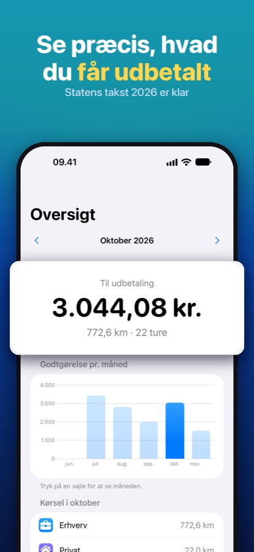
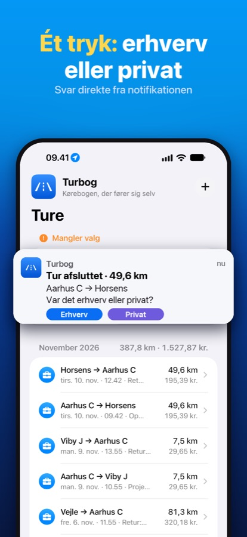
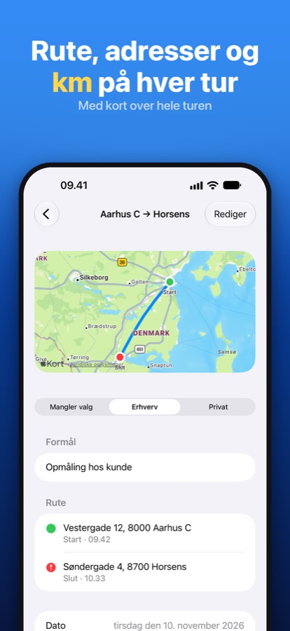
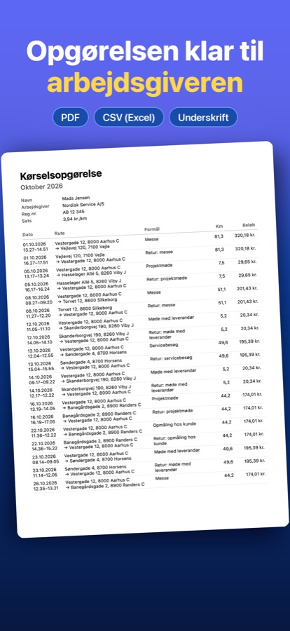
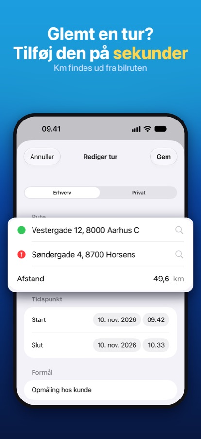
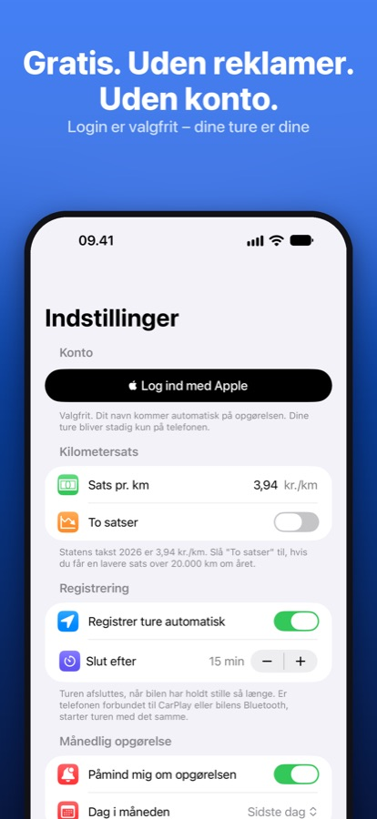

Kørebogen, der fører sig selv
Turbog registrerer dine køreture automatisk og viser præcis, hvor meget du skal have udbetalt i kørselsgodtgørelse. Ingen papir, ingen regneark, ingen glemte ture.
Til iPhone · Gratis · Uden reklamer · Ingen konto påkrævet
Kør som du plejer
Turbog er lavet til dig, der kører i din egen bil for din arbejdsgiver – fx sælgere, håndværkere, servicefolk, konsulenter og hjemmeplejen.
1. Kør
Turen starter af sig selv, når du kører. Rute, adresser og kilometer gemmes med GPS – også når telefonen ligger i lommen.
2. Ét tryk
Når bilen holder stille, spørger Turbog: erhverv eller privat? Svar direkte fra notifikationen eller på bilens CarPlay-skærm.
3. Få pengene
Send månedens opgørelse som PDF eller Excel til din arbejdsgiver med dato, rute, formål, kilometer og beløb.
Alt det, en kørebog skal kunne
Statens takst for 2026 er udfyldt på forhånd. Du kan selv ændre satsen og slå to satser til, hvis du kører over 20.000 km om året.






Hvor meget skal du have udbetalt?
Skriv, hvor mange kilometer du kører for din arbejdsgiver om måneden. Beregneren bruger statens satser for skattefri kørselsgodtgørelse i 2026.
Kører du mere end ca. 1.667 km om måneden, rammer du grænsen på 20.000 km om året, og resten af året gælder den lave sats.
Læs mere om satserne og reglerne for 2026 →
Fører du hellere kørebog i Excel? Hent den gratis skabelon.
🚗 Turbog i CarPlay
Start og afslut ture, se dagens kilometer og vælg erhverv eller privat på bilens skærm.
🏠 Advarsel om hjem–arbejde
Gem hjem og fast arbejdsplads, så advarer Turbog om kørsel, der normalt ikke giver skattefri godtgørelse.
📊 Statistik
Se hvor meget du kører, din længste tur, hvilke dage du kører mest, og hvor stor en del der er privat.
✍️ Glemt en tur?
Tilføj den manuelt. Adressen findes for dig, og kilometer beregnes ud fra bilruten.
🔗 Slå ture sammen
Har et stop ved tanken delt én tur i to? Slå dem sammen med ét tryk.
🔒 Dine data er dine
Ingen reklamer og ingen sporing. Turene gemmes på din iPhone og i din egen iCloud.
Spørgsmål og support
Hvad koster Turbog?
Turbog er gratis. Der er ingen reklamer, og du behøver ikke oprette en konto.
Hvorfor skal appen have adgang til placering "Altid"?
Så ture kan registreres, uden at du åbner appen. Placeringen bliver på din telefon og i din egen iCloud.
Starter turen ikke af sig selv?
Tjek under Indstillinger → Turbog på din iPhone, at placering står til "Altid", og at Bevægelse og fitness er slået til. Du kan altid starte en tur med + i appen.
Kan jeg bruge Turbog, hvis jeg er selvstændig?
Ja, du kan bruge den som kørebog. Satserne og opgørelsen i appen er dog lavet til lønmodtagere, der får skattefri kørselsgodtgørelse fra deres arbejdsgiver.
Kan jeg få mine ture med over på en ny telefon?
Ja. Turene ligger i din iCloud, når du er logget ind med samme Apple-id.
Kan jeg slå registreringen fra i ferien?
Ja. Slå "Al kørsel er privat" til under Indstillinger. Så gemmes turene som private, og du bliver ikke spurgt.
Har du andre spørgsmål eller problemer, så skriv til support@turbogapp.dk.
Lad kørebogen føre sig selv
Hent Turbog gratis og se, hvad du skal have udbetalt allerede efter første tur.
Hent gratis i App Store